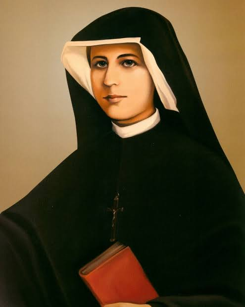

Kochasz Polskę?
Zapraszamy Wszystkich Ludzi Dobrej Woli!
Którym na sercu leży przyszłość naszej Ojczyzny do Wielkiej Nowenny za Polskę i nasz Naród! Nowenna jest odpowiedzią na wielkie pragnienie wielu ofiarnych serc Polaków, by walczyć na kolanach o Boże Miłosierdzie i Boską interwencję dla Polski.
Nowenna rozpocznie się we wtorek 11 lutego i będzie trwać do Wielkiego Wtorku 15 kwietnia. Dziewięć tygodni nieustannej modlitwy i ofiarowania w niedzielę Komunii Świętej wynagradzającej za grzechy narodowe.
Ukoronowaniem nowenny będzie zawierzenie Polski Miłosierdziu Bożemu 27 kwietnia podczas Mszy Świętej. O miejscu zawierzenia poinformujemy niedługo.
Z dzienniczka Siostry Faustyny

Często się modlę za Polskę, ale widzę wielkie zagniewanie Boże na nią, iż jest niewdzięczna. Nieustannie przypominam Bogu Jego obietnice miłosierdzia. Ojczyzno moja, ile ty mnie kosztujesz, nie ma dnia, w którym bym się nie modliła za ciebie
(Św. Faustyna, Dz. 1188)
Przyłącz się do wspólnej, codziennej modlitwy za Polskę!
Zapraszamy wszystkich ludzi dobrej woli, którym zależy na tym, aby Polska wypełniła Wolę Bożą
Start: 11 lutego 2025
Koniec: 15 kwietnia 2025
Ukoronowanie Nowenny: 27 kwietnia 2025r
Codziennie:
– Jedna część różańca
– Koronka do Bożego Miłosierdzia
– Modlitwa za Ojczyznę
W każdą niedzielę:
– Komunia Święta Wynagradzająca za grzechy Polaków
Modlitwa za ojczyznę Za zgodą Kurii Biskupiej Warszawsko-Praskiej z dnia 6 XII 2017 r., nr 2284(K)2017
Boże, Ty jesteś Stwórcą wszystkiego co istnieje
i Ojcem wielkiej rodziny ludzkiej.
Powołałeś Ojczyznę naszą, Polskę,
do przekazania światu iskry Bożego Miłosierdzia
przygotowującej na powtórne przyjście Twojego Syna.
Nie opuszczaj nas, mimo naszych grzechów,
waśni, słabości i niewierności, pychy i egoizmu.
Pragniemy Cię przebłagać i prosić,
byś dał nam odczuwać Twoją Ojcowską obecność
i dokonał zmartwychwstania serc naszych.
Boże, Ty jesteś miłosierdziem i sprawiedliwością,
nie pozwól nam zmarnować dziedzictwa świętego Jana Pawła II
i naszych świętych Rodaków.
Tobie powierzamy losy naszej Ojczyzny,
jej teraźniejszość i przyszłość.
Przez miłość do Matki Twojego Syna Jezusa,
uchroń nas od słusznej kary za nasze grzechy
i wybaw nas od głodu, ognia, wojny i zniszczenia.
Dokonaj swojej Boskiej interwencji w obecnych czasach.
Panie, bez mocy pochodzącej od Ciebie nic nie możemy uczynić,
a z Tobą możemy wszystko.
Spraw, by Polska była wierna Twojej woli,
abyś mógł ją wywyższyć w potędze i świętości.
Przez Chrystusa, Pana naszego. Amen.
Maryjo, Królowo Polski – módl się za nami.
Aniele Stróżu Polski – módl się za nami.
Święty Wojciechu – módl się za nami.
Święty Stanisławie – módl się za nami.
Święty Andrzeju Bobolo – módl się za nami.
Święta Faustyno – módl się za nami.
Święty Janie Pawle II – módl się za nami.
Wszyscy Polscy Święci i Patronowie nasi – módlcie się za nami.
Więcej informacji o Nowennie oraz rejestracja dostępne jest na tej stronie